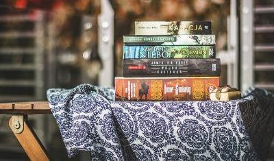

How to cope with lockdown
It’s important for you to look after your mental health, be aware of
other people’s mental health and, ultimately, live in a safe, nice
environment that feels like your home. We spoke to two wellbeing experts
for their advice on how to ensure all this during the autumn and winter
lockdowns.
(Read more)
Combat Christmas loneliness
Whether you’re unable to visit family, have had to uninvite incoming guests
or will be spending the day alone, the new way of speding the day will come
as a shock to all of us. One of the biggest worries right now will be how to
cope with spending Christmas away from the people we love.
(Read more)

Your lockdown reading pile
For those with stacks and stacks of books in their TBR (to be read) piles at home,
the coronavirus lockdown might seem like a great opportunity.
For a lot of people, escaping in a good book has been the way to switch off
and relax in lockdown. There are books to inspire.
(Read more)